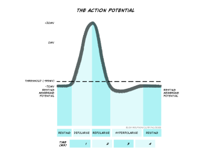
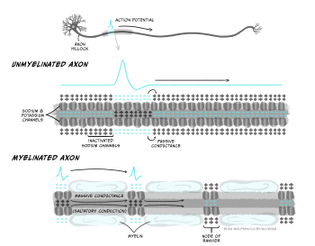
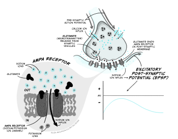
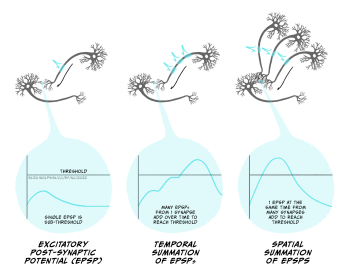
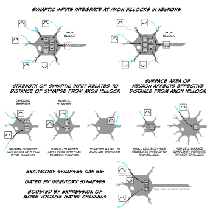
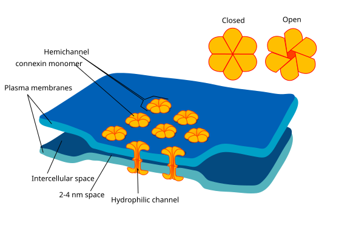

Neuronal transmission
Learning Objectives
By the end of this chapter, you will understand:
- that neurons signal electrically within each cell and chemically between cells
- the ionic basis of the action potential and how it is conducted
- the processes involved in synaptic transmission
- how neurons integrate information at synapses.
In the last chapter, we learnt about electrical signalling in the brain and how electrochemical gradients and ion channels allow neurons to set their membrane potential. In this chapter we will learn how these processes generate the signals within and between neurons that form the basis for the information processing in the brain.
Signals are transmitted electrically within neurons and chemically between neurons, at synapses. Electrical signals within neurons take the form of action potentials and synaptic potentials. We can talk of electrical signals in cells as producing a positive change in the membrane potential – termed depolarisation, or a negative change in the membrane potential, termed hyperpolarisation.
Action potentials

An action potential is a brief electrical signal that is conducted from the axon hillock where the neuron’s soma joins the axon, along the axon to the axon terminals. It can be measured from electrodes placed in or near a neuron connected to a voltmeter (Figure 3.21). This electrical signal is a rapid, localised change in the membrane voltage which transiently changes from the negative resting membrane potential to a positive membrane potential. A positive shift in the membrane potential like this is termed depolarisation. The membrane then rapidly (within 1 ms) becomes negative again – it repolarises – and then shifts even more negative, becoming hyperpolarised before returning to the resting membrane potential less than 5 ms after it first depolarised (Figure 3.22). This transient voltage change then spreads like a wave down the axon with a conduction velocity of between 1 and 100 m/s.

The action potential is caused by opening and closing of voltage-gated ion channels
What is happening within the axon to cause these changes in membrane voltage?
As discussed above, the way in which neurons generally alter their membrane potentials is by changing their membrane permeability to different ions by opening and closing ion channels, and that is exactly what is happening during the action potential. The ion channels that open and close to form the action potential are voltage-gated ion channels. As their name suggests, these channels open or close depending on the voltage across the membrane. There are many different types of voltage-gated ion channels, which differ in their thresholds for activation – the voltages at which they open and close – as well as their selectivity for ions. When they open, ions flow down their electrochemical gradients towards their equilibrium potentials.
Voltage-gated sodium and potassium channels open to depolarise then hyperpolarise the membrane

The upstroke (when the voltage depolarises rapidly) of the action potential (Figure 3.23) is caused by the opening of voltage-gated sodium channels that have a threshold for opening of -55 mV. When the membrane of the neuron depolarises to -55 mV, these voltage-gated sodium channels start to open. Sodium ions flood into the cell, depolarising the membrane and opening even more sodium channels, causing a very rapid depolarisation of the membrane. This feedforward activation of sodium channels makes the action potential an all or nothing event (it either happens, or it does not). If the threshold is reached, sodium channels open, accelerating depolarisation happens and an action potential occurs (or ‘fires’). If the threshold is not reached, sodium channels do not open and no action potential will fire. Furthermore, the action potential is always the same size and is not graded by the size of the incoming depolarisation.
If the sodium channels stayed open, then the membrane potential would stabilise at the equilibrium potential for sodium (ENa), at +62 mV, but instead the voltage reaches only around +40 mV before hyperpolarising again, so the membrane is depolarised for less than 1 ms. The depolarisation is so brief for two reasons: firstly, the voltage-gated sodium channels rapidly inactivate, closing the channel and preventing further Na+ influx to the cell. Secondly, a second type of voltage-gated channel activates: the voltage-gated potassium channel. Some of these voltage-gated potassium channels activate at the same threshold as the sodium channels but more slowly, and others activate at a more positive voltage (around +30 mV). Both these factors mean that opening of voltage-gated potassium channels is delayed relative to the Na+ influx. When channels open, however, K+ leaves the cell, causing the membrane to become more negative, or hyperpolarised, producing the falling phase or downward stroke of the action potential (Fig. 3.23).
Increased K+ permeability causes an afterhyperpolarisation
Many voltage-gated potassium channels switch off quite slowly after the membrane potential falls below their threshold voltage. This means that after the membrane potential has repolarised, reaching the resting membrane potential, there are still some voltage-gated potassium channels open, in addition to the potassium leak channels that are always open. Because the membrane is now more permeable to K+ than at rest, the membrane potential hyperpolarises below the resting membrane potential, getting even nearer to the equilibrium potential for K+, EK. This hyperpolarised phase is termed the afterhyperpolarisation. Then as the voltage-gated potassium channels close, the permeability of the membrane for potassium returns to normal and the membrane potential depolarises slightly back to the resting membrane potential.

Sodium channel inactivation causes the refractory period for action potential firing
The opening and closing of voltage-gated sodium and potassium channels at different threshold voltages and inactivation of sodium channels occur because gates in the proteins move to open and close the pore region in the centre of the channel that allows ions to flow across the membrane (Figure 3.24). At the resting membrane potential, voltage-gated sodium and potassium channels both have a conformation or shape that means part of the protein blocks the ion channel’s pore (i.e. it is like there is a closed gate blocking the pore ). When the threshold voltage is reached, the shape of the ion channel proteins change slightly so that this gate opens to let ions through. This gate opens quickly in voltage-gated sodium channels but more slowly, or at more depolarised potentials in voltage-gated potassium channels, so during the rising phase of the action potential only the sodium channel gates are open. After a very short time, however, an inactivation gate on the intracellular side of the voltage-gated sodium channel swings shut, blocking the pore from the inside and stopping any more Na+ flux . As the voltage-gated potassium channels open, during the falling phase of the action potential, voltage gated sodium channels are inactivated. Even when the membrane falls below the threshold voltage, closing the voltage-sensitive gate, the sodium channels’ inactivation gates are still closed. This means that the sodium channels cannot re-open, and the neuron cannot fire another action potential until the inactivation gates reopen.
This period of time when firing of another action potential is impossible is called the absolute refractory period (Figure 3.25). Sodium channels’ inactivation gates start to reopen during the falling phase of the action potential, when voltage-gated potassium channels are still open. At this stage, it becomes possible to fire another action potential, but a stronger stimulus is needed to activate the sodium channels. This period is the relative refractory period (Figure 3.25). Stronger stimuli (that depolarise a neuron more) can therefore produce a faster firing rate in a target neuron than weaker stimuli by intruding into the relative refractory period.

Action potential propagation
Action potentials are initiated in the axon’s initial segment near the soma, right next to the axon hillock. If the membrane potential there depolarises sufficiently to trigger voltage-gated sodium channels to open, then an action potential will fire in that section of membrane. In an unmyelinated axon (Figure 3.26), some of the positive charge (Na+ ions) that enters the cell during the rising phase of the action potential spreads to the adjacent bit of membrane, depolarising that membrane and opening voltage-gated sodium channels there, producing an action potential, which spreads onwards to the next bit of membrane, such that a wave of depolarisation and repolarisation spreads down the axon all the way to the axon terminals. Sodium channel inactivation prevents upstream spread of the action potential back towards the soma: because the upstream membrane is in the absolute refractory period, the action potential can only spread downstream to membrane in which sodium channels are not inactivated.

Increasing the axon diameter and myelinating the axon increases conduction speed
Action potentials spread quite slowly along small unmyelinated axons – around 0.5-2 m/s – because each bit of membrane has to fire an action potential and propagate it to the next bit of membrane. This speed of conduction would be too slow to get up-to-date information about what is going on at the far end of our bodies – imagine wiggling your toe and only knowing 4 seconds later that you actually had wiggled it! Luckily, action potential conduction can be increased in two major ways.
Firstly, conduction speed is increased by increasing the diameter of the axon, which reduces the resistance to current flow within the axon, allowing depolarisation to passively spread further down the axon and therefore more rapidly activate action potential firing in downstream membrane.
Secondly, myelination of axons increases conduction speed. The layers of myelin that are tightly wrapped around axons by oligodendrocytes (in the CNS) or Schwann cells (in the PNS) insulate the axon membrane from current loss across the membrane. Axon membrane ensheathed in myelin layers does not contain ion channels – it has low permeability and high resistance to current flow. This allows current to spread further inside the axon without leaking out of the cell, allowing current to spread further down the axon without being dissipated. The myelin sheath also decreases the membrane capacitance – the amount of charge stored at the membrane. Charge gets stored at the membrane when positive and negative charges are attracted to each other across the thin plasma membrane, holding them near each other at opposite sides of the membrane. By wrapping tightly around the membrane, myelin increases the distance between the intracellular and extracellular fluids containing charged particles so they are less attracted to each other across the ensheathed membrane. The lowered capacitance allows current to spread further (and faster) inside the axon as ions do not get stuck at the membrane.
The result of myelination is that depolarisation can rapidly spread passively along relatively long distances of axon, but it cannot spread down the whole length of the axon. The signal still needs to be boosted periodically by generating a new action potential. This happens at nodes of Ranvier, which are gaps in the myelin sheath that are packed with ion channels. When the nodes of Ranvier depolarise, their voltage-gated sodium channels open, triggering a new action potential which can then passively spread across the ensheathed internode region of the axon to the next node of Ranvier (Figure 3.26). Because the action potential rapidly jumps between nodes, this form of conduction is called saltatory conduction (from Latin ‘saltare’ – ‘to jump’). Large diameter, myelinated axons can conduct action potentials at speeds up to 100 m/s, meaning information about toe-wiggling can reach your brain in a respectable 0.02 s. Indeed, sensory neurons carrying information about where our bodies are in space have some of the fastest propagating axons of any cell.
Demyelinating conditions, such as multiple sclerosis and Guillain-Barré Syndrome, cause a multitude of symptoms, including altered sensation, muscle weakness and cognitive impairments, due to loss of myelin sheaths, disrupted neuronal communication and eventual axonal degeneration.
Energy use by action potentials
The flow of ions through voltage-gated ion channels during the action potential occurs down their electrochemical gradients so it does not itself use energy. During an action potential very few ions actually flow so the concentration gradients do not change significantly over the short term. Over the longer term, however these ions need to be pumped back to maintain concentration gradients and the resting membrane potential so that further action potentials can fire. This is achieved by the Na+/K+ ATPase, using ATP. Myelination of axons helps speed action potential conduction, but also makes action potential firing more energy efficient, because fewer ions need to flow to depolarise the myelinated membrane. Fewer ions therefore need to be pumped back across the membrane, so less ATP is needed by the Na+/K+ ATPase.
Action potential: Key takeaways
- When the membrane reaches a threshold voltage, voltage-gated sodium channels briefly open, depolarising the cell
- Voltage-gated potassium channels open and repolarise the cell
- Depolarisation spreads along the membrane activating nearby sodium channels
- Inactivation of sodium channels means action potential propagates in one direction and sets a limit on firing frequency
- Action potentials are all-or-nothing, and only occur once the threshold for sodium channel activation is met
- Myelination speeds action potentials and makes them more energy-efficient.
Communication between neurons
Neurons signal electrically, using action potentials to communicate between the soma and the axon terminals. The action potential signals that the soma and axon’s initial segment depolarised to the threshold voltage. But what generates that depolarisation in the first place? What is the signal that depolarises a neuron to make it fire an action potential? We saw in chapter 3 that neurons integrate lots of inputs and compute whether or not to fire an action potential. In sensory neurons, these inputs to a neuron might be information from the outside (or internal) world, for example stretch of the skin, a painful heat, or a delicious smell. You will learn more about how these types of stimuli generate inputs in neurons in later chapters. But for most neurons, the inputs come from other neurons, via connections, or synapses. While neurons communicate electrically within a cell, communication between neurons is usually chemical – a chemical or neurotransmitter is released from one neuron and acts to generate a signal on the next neuron.
Synaptic transmission
During synaptic transmission, an action potential in a neuron – the presynaptic neuron – causes a neurotransmitter to be released into a tiny gap called the synaptic cleft between two neurons. The neurotransmitter diffuses across the synaptic cleft and binds to receptors on the neuron receiving the signal – the postsynaptic neuron, which produces a change in the postsynaptic cell. Looking into this process in more detail, we can split the processes of synaptic transmission into a number of separate steps (Figure 3.27):

- An action potential arrives at the axon terminal (or presynaptic terminal), depolarising it.
- Depolarisation of the presynaptic terminal opens a new type of voltage-gated ion channel – the voltage-gated calcium channel, which has a threshold for activation of around -10 mV. When these channels open, calcium (Ca2+) enters the cell down its electrochemical gradient, as there is a higher concentration of Ca2+ in the extracellular fluid compared to the intracellular fluid (1.5-2 mM outside the cell, vs. 0.05 – 0.1 mM inside the cell), and its positive charge attracts it into the negatively charged cell. Unlike Na+ and K+, Ca2+ is not present at high enough concentrations to affect the membrane potential of the cell. Instead, an increase in intracellular Ca2+ concentration can trigger different signalling cascades in the cell, by binding to different proteins.
- Ca2+ entering through voltage-gated calcium channels binds to a protein called synaptotagmin.
- The presynaptic terminal contains lots of little membrane ‘bags’ called synaptic vesicles, which are packed with neurotransmitter. Some of these vesicles are close to an area on the plasma membrane of the cell called the ‘active zone‘, whereas the vesicles that are still being packed with neurotransmitter are further away from the membrane and nearer the centre of the presynaptic terminal. The vesicles at the active zone are ‘docked’, being held close to the plasma membrane by a complex of proteins called SNARE proteins. When calcium binds to synaptotagmin, the membranes of the vesicle and the plasma membrane of the cell are brought even closer together and fuse, releasing the contents of the vesicle (neurotransmitter molecules) into the extracellular space of the synaptic cleft. The vesicles that are already docked at the active zone are more readily released so are the first to fuse with the membrane and release their neurotransmitter.
- The synaptic cleft is very narrow, so neurotransmitter molecules can quickly diffuse across from the presynaptic terminal to the post-synaptic cell.
- The postsynaptic cell’s membrane (usually part of a dendrite) contains receptors for the neurotransmitter molecules that are released from the presynaptic cell. A receptor is a protein that can bind a specific molecule – termed a ligand. Many of these receptors are part of ligand-gated ion channels. These are ion channels that open when a specific molecule binds to them. Ions flow through the open ion channels, down their electrochemical gradients, producing a change in the membrane voltage in the post-synaptic cell.
- To terminate synaptic signalling, neurotransmitter must be removed from the synaptic cleft. This is achieved by transporters on neurons or astrocytes, proteins which take up neurotransmitter into the cell where it can be broken down, recycled or repackaged. Some neurotransmitters may also be broken down by proteins that are present in the synaptic cleft.
Excitatory synapses
Excitatory synapses make the post-synaptic neuron more likely to fire an action potential by producing a depolarisation in the post-synaptic cell, moving it towards the threshold potential for opening voltage-gated sodium channels. This happens when Na+ ions are allowed to flow into the cell.
The main excitatory neurotransmitter in the brain is glutamate (acetylcholine is an important excitatory neurotransmitter in the peripheral nervous system). Glutamate’s main receptors are AMPA and NMDA receptors. AMPA receptors are ligand-gated ion channels that let both Na+ and K+ pass through them. Though K+ ions leave the cell when AMPA receptors open, the main effect is an influx of Na+, so when glutamate binds AMPA receptors, the membrane depolarises towards the threshold for firing an action potential. This depolarising change in membrane potential is termed an excitatory post-synaptic potential (EPSP; Figure 3.28) and lasts several (> 10) milliseconds.

NMDA receptors are also ligand-gated ion channels and are permeable to Ca2+ as well as Na+ and K+. However they are also voltage-dependent, as they are blocked by Mg2+ ions unless the membrane potential is depolarised. They are also slower than AMPA receptors to open and close. Because of this they do not contribute much to the EPSP. However they play a really important role in altering synaptic strength – or how much of an effect a presynaptic action potential can have on the postsynaptic cell.
Metabotropic glutamate receptors are often also present. Metabotropic receptors are also known as G-protein coupled receptors. These proteins bind glutamate but do not directly open an ion channel. Instead they trigger other intracellular signalling pathways that can make other changes to the cell, for example altering the properties of other ion channels. Because their action is via intracellular signalling pathways, they have slower effects than ionotropic receptors (receptors such as AMPA and NMDA receptors that are part of, and directly activate, ion channels).

Usually an EPSP from a single synapse won’t depolarise the post-synaptic neuron enough to reach the threshold for firing an action potential. Instead multiple synaptic inputs need to be summed together to get a big enough EPSP (Figure 3.30). If the presynaptic neuron fires lots of action potentials in a short space of time, then the inputs into a single synapse can add together to form a larger EPSP. This is temporal summation. Additionally, if different excitatory synapses are active at the same time, then these EPSPs can spatially summate to generate a larger EPSP. Both temporal and spatial summation happen to integrate the inputs onto a postsynaptic cell, to determine whether it fires an action potential.

Inhibitory synapses
Inhibitory synapses make the post-synaptic neuron less likely to fire an action potential, by hyperpolarising the membrane, or by preventing it from depolarising by holding the membrane below that needed to activate sodium channels.
The main inhibitory neurotransmitter in the brain is GABA (gamma aminobutyric acid), whose main receptors are GABAA and GABAB receptors. GABAA receptors are ligand-gated ion channels that are permeable to Cl– ions when GABA is bound. Because Cl– ions enter the cell on activation and the equilibrium potential for Cl– (ECl) is -65 mV, opening GABAA channels will tend to keep the membrane potential near -65 mV. As this is below the threshold for activation of sodium channels, this will inhibit the post-synaptic neuron from firing an action potential. Depending on the membrane voltage of the cell when these channels open, the membrane potential might slightly hyperpolarise or depolarise the cell. In each case, however, this membrane potential change is inhibitory (an inhibitory post-synaptic potential or IPSP) because it is holding the membrane potential away from that needed to fire an action potential. For example, if the neuron’s membrane potential is -75 mV when GABAA receptors open, the membrane potential will move towards ECl so will depolarise slightly to -65 mV. However the open GABAA receptors prevent the membrane from depolarising beyond -65 mV to the threshold for firing an action potential. If the membrane potential is more positive than ECl, e.g. -60 mV, then opening GABAA channels will make the membrane potential more negative or hyperpolarised, until it reaches -65 mV. In both cases, opening the GABAA channels has made the neuron less likely to reach threshold for action potential firing.
GABAB receptors are metabotropic receptors that are linked to activation of potassium channels, increasing K+ permeability. Their activation therefore shifts the membrane potential towards EK, or -80 mV, hyperpolarising the cell. GABAB-mediated membrane potential changes are therefore also IPSPs as they hyperpolarise the membrane away from the threshold for action potential firing, but because they require intracellular signalling these IPSPs are slower than GABAA-mediated membrane potential changes.

Synaptic integration
Postsynaptic cells use temporal and spatial summation to integrate all the different synaptic inputs to the cell. If the net effect of all the inputs is to depolarise the axon initial segment above the threshold for activating sodium channels, the cell will fire an action potential. The way in which all these inputs are integrated to generate an output (action potential) is therefore the basis of how neurons perform the computations on which our thoughts and feelings depend.
Neurons can perform different computations based on their morphology and the spatial organisation of their excitatory and inhibitory inputs, as this alters how they are summated (Fig. 3.32). Most synaptic inputs are onto the dendrites of a neuron, but some may be onto the soma or even the axon. Synaptic inputs to the distal end of dendrites (far from the soma) will potentially have a smaller effect on the membrane potential at the axon initial segment than an input onto the soma, because the signal degrades over the distance they need to travel, while inputs onto the axon initial segment itself can have an even stronger effect than those onto the soma. Excitatory inputs onto distal dendrites can also be gated by inhibitory synapses that are more proximal to the soma on the same dendrite, so the EPSP cannot reach the soma. The ability of EPSPs and IPSPs to spread along dendrites is also determined by factors such as the number and type of ion channels in the dendritic membranes, as well as the size of the cell. If there are few ion channels, then charge cannot as easily leak out across the membrane and dissipate the potential chance. Similarly, a given input will spread further in a small cell than a larger, highly branched cell, as less charge gets lost at the membrane (the smaller cell has a lower capacitance). However, dendrites also express voltage-gated ion channels that can boost signals from distal dendrites.

Neurons’ computation can therefore be affected by many factors, from the location and strength of individual synapses, to the shape of the cell and the number and location of ion channels expressed. Many of these properties can be modified based on the cell’s activity, allowing alterations to the contribution that different synaptic connections play on the decision to fire an action potential. This plasticity in synaptic connectivity is critical for allowing associations to be formed and broken between neurons, forming the basis of learning and memory as well as shaping how we perceive the world.
Gap Junctions
While most connections between neurons are via chemical synapses, direct electrical connections also occur. These are called gap junctions and are formed by pairs of hemichannels, one on each cell, made up of a complex of proteins called connexins. Compared to other ion channels, gap junctions are relatively non-selective, allowing cations (positively-charged ions) and anions (negatively-charged ions) through as well as small molecules such as ATP. Though regulation of their opening is possibly, they are usually open, meaning that electrical signals can spread through connected cells. Gap junctions are more common during development and are rare between excitatory cells in mature nervous systems. They are most common between certain inhibitory interneurons in the brain and the retina, as well as between glia, such as astrocytes.


Other neurotransmitters
While glutamate is the main excitatory neurotransmitter in the brain, and GABA is the main inhibitory neurotransmitter in the brain, there are many other neurotransmitters that can also be released at synapses. These can be broadly divided in to different categories, based on the chemical structure of the neurotransmitter molecules. All activate their own specific receptors.
Amino acid neurotransmitters include glutamate, GABA and also glycine, which is the major inhibitory neurotransmitter in the brainstem and spinal cord.
Monoamine neurotransmitters include noradrenaline, dopamine and serotonin. There are specific populations of monoaminergic neurons in the brain that originate in specific midbrain and brainstem nuclei and send projections to widespread brain regions, modulating processes such as reward, attention and alertness. Noradrenaline is also an excitatory transmitter in the peripheral nervous system.
Peptide neurotransmitters include naturally occurring opioid peptides – endorphins, enkephalins and dynorhpins – that activate the same receptors as opiate drugs such as morphine and heroin. There are numerous other peptide neurotransmitters, including oxytocin and somatostatin. Peptide neurotransmitters are often co-released at synapses with GABA or serotonin.
Purine neurotransmitters include ATP, the cell’s main energy currency, and its breakdown product adenosine.
Acetylcholine is unlike other neurotransmitters structurally. It is a common excitatory neurotransmitter in the peripheral nervous system, including at the neuromuscular junction, and is also released by many neurons in the brain, where it is involved in regulating alertness, memory and attention.
Synaptic transmission : Key takeaways
- When an action potential arrives at an axon terminal, voltage-gated calcium channels open, allowing Ca2+ influx into the terminal
- Ca2+ binds synaptotagmin, pulling synaptic vesicles very close to the plasma membrane. This triggers fusion of synaptic vesicles with the plasma membrane, releasing neurotransmitter into the synaptic cleft.
- Neurotransmitter diffuses across the synaptic cleft and binds to ionotropic or metabotropic receptors on the postsynaptic cell.
- Receptors for excitatory neurotransmitters such as glutamate trigger Na+ entry into the postsynaptic cell, depolarising the membrane (producing an EPSP), making it more likely the postsynaptic cell will depolarise to the threshold for firing an action potential.
- Inhibitory neurotransmitters such as GABA activate receptors that keep the membrane potential negative with respect to the threshold for firing an action potential (generating an IPSP).
- Postsynaptic neurons integrate different excitatory and inhibitory inputs to decide whether to fire an action potential.
- The location and strength of different synapses, as well as the shape of the post-synaptic cell and expression of different ion channels modify the integration of different inputs – changing these can alter the computation done by the cell.